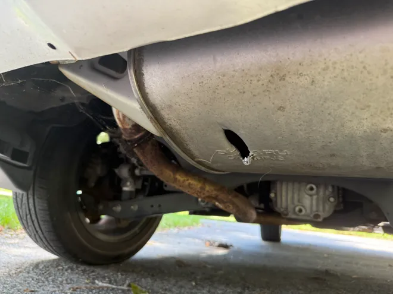
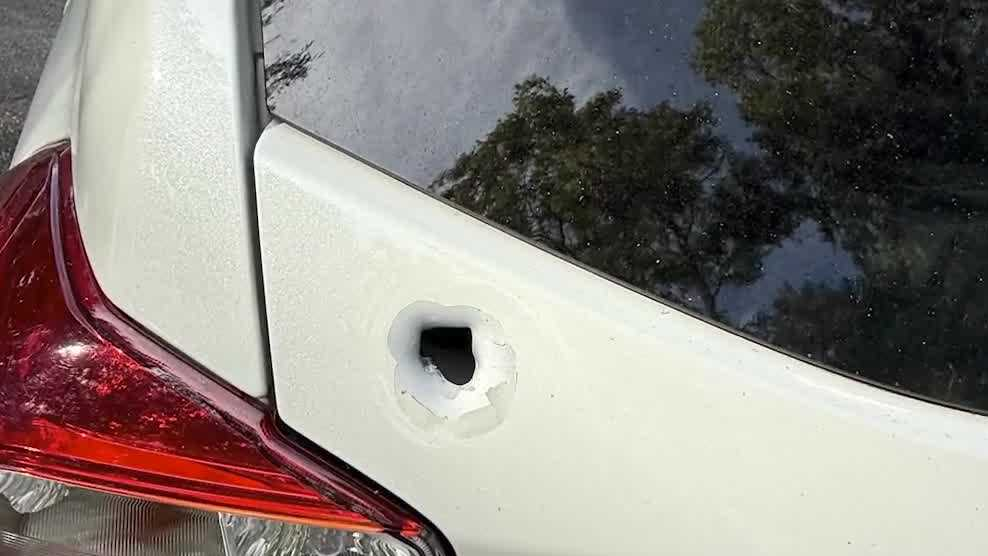
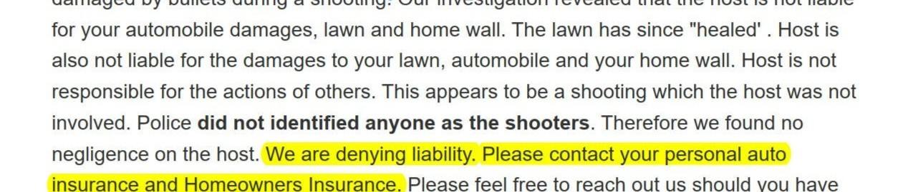
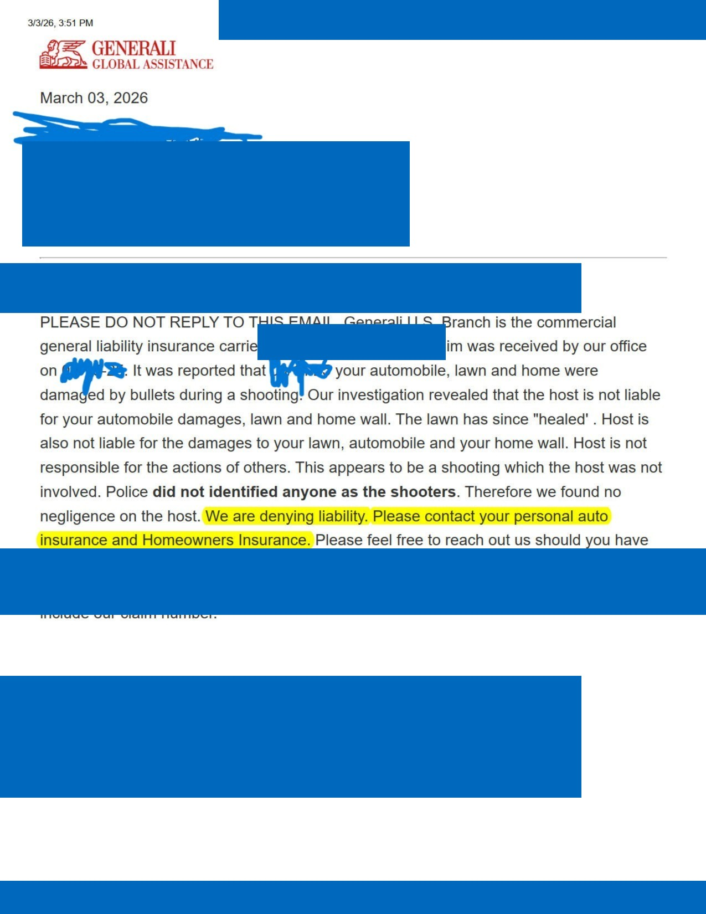

“Party house” is a hypothetical, unverified label from listing keyword matches. The host count and filter also include listings flagged as over capacity. Neither signal proves a party occurred or that a rule was broken. Please submit a complaint only if you have evidence of parties occurring at this property.
Candidates are within 550 m of the original Airbnb point, sorted by distance to the parcel. Parcel points and owner records are reference data, not verified listing addresses. You will review and submit your report in Google Forms.
Show listings and nearby license information for ?
This is a hypothetical comparison, not measured unpaid revenue. Listings and permits may not correspond one-to-one; some listings may not require a permit, multiple listings may share a property, and locations/statuses may be incomplete. It does not establish a violation or loss.
Fee source: Short Term Rental Property Frequently Asked Questions · Nashville.gov
Source records can be incomplete, displaced, or out of date. Listing-to-permit proximity is not proof of a match.
I personally lived next door to one of the worst of the worst of party houses. We experienced lawn damage and trespassing, along with loud late-night parties that extended into the early morning hours.
During one violent shooting, my home and the homes and cars of two other neighbors were struck by numerous bullets. (Airbnb's insurance provider has yet to pay for any of the damages). My mother and our dog were nearly struck by bullets while inside what should have been the safety of our own home. There were at least two active shooters, and around 40 rounds were fired.
That is why I want to expose the impact party houses can have on their neighbors. I built this tool to help people understand short-term rental activity and document concerns. This is my personal account and motivation;it does not claim any "party house" listing on this map is likely to have a party this bad.
Personal identifiers are omitted from the document excerpt shown below.




STVR Doorman is an independent community tool. It is not affiliated with, endorsed by, or operated by the City of Nashville, any government office, or any other agency.
Information and map classifications are estimates based on available and community-provided data. They are hypothetical screening results and do not prove that a law was violated, that a party occurred, or that a listing is unlicensed. Permit proximity, listing text, and automated estimates can be incomplete or incorrect. Please verify details with official sources and submit reports only when you have relevant evidence.